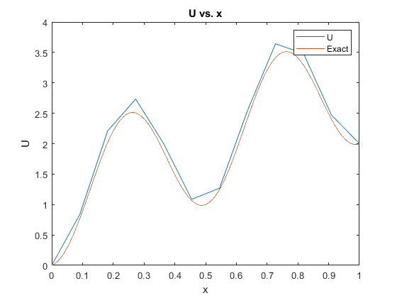
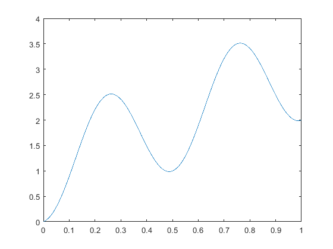

Contents
Question 2
clc; close all;
n = 10;
h = 1/(n+1);
tri = full(gallery('tridiag',n,1,-2,1));
func = @(x) (4*pi)^2*cos(4*pi*x)*h^2;
f = [];
x = [];
for i=1:n
x(i) = h*i;
f(i) = func(x(i));
end
f(n) = f(n) - 2;
x = [0 x 1];
x = x';
u = tri\f';
u = [0;u;2];
ax = solutionAN10000(:,1);
ay = solutionAN10000(:,2);
figure
plot(x,u);
hold on
plot(ax,ay)
title('U vs. x')
legend('U','Exact')
xlim([0 1])
xlabel('x')
ylabel('U')
fid = fopen('q2data.txt','w');
fprintf(fid, '\tx\t\t\tu\n');
fprintf(fid,'%f\t%f\n',[x,u].');

Question 3
clc; close all;
n = 10^4;
h = 1/(n+1);
tri = full(gallery('tridiag',n,1,-2,1));
func = @(x) (4*pi)^2*cos(4*pi*x)*h^2;
f = [];
x = [];
for i=1:n
x(i) = h*i;
f(i) = func(x(i));
end
f(n) = f(n) - 2;
x = [0 x 1];
x = x';
u = tri\f';
u = [0;u;2];
plot(x,u)

Question 5
clc; clear all; close all;
n = 10;
h = 1/(n+1);
tri = full(gallery('tridiag',n,1,-2,1));
tri(1,1) = -2/3;
tri(1,2) = 2/3;
func = @(x) (4*pi)^2*cos(4*pi*x)*h^2;
f = [];
x = [];
for i=1:n
x(i) = h*i;
f(i) = func(x(i));
end
f(1) = f(1) + (20/3)*h;
f(n) = f(n) - 2;
x = [0 x 1];
x = x';
u = tri\f';
u0 = -(20/3)*h+(4/3)*u(1)-(1/3)*u(2);
u = [u0;u;2];
plot(x,u)